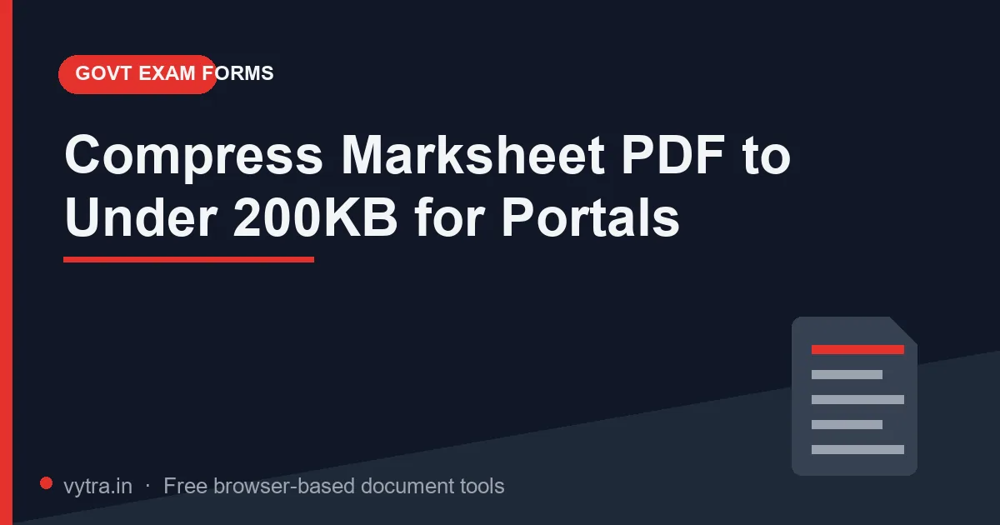

Compress Marksheet PDF to Under 200KB for Portals

A marksheet is the worst-case document for file size: full-page colour scans, rubber stamps, holographic seals, and off-white paper that refuses to compress like clean white text. Government portals — scholarships, admissions, exam forms — routinely cap such documents at 200KB or even 100KB, and a colour scan of a single marksheet can easily weigh 2–5MB.
Quick answer: In the Compress PDF tool, select the Extreme preset and enable "Convert scanned marksheets to grayscale". That combination is built for exactly this job: a 3MB colour scan typically lands at 80–180KB — under the 200KB line with a readable result. Always confirm the exact cap in your exam's official notification (ssc.nic.in, upsc.gov.in, ibps.in).
Why marksheets resist compression
- Colour data everywhere. Even "white" paper carries warm tones and scanner noise; colour data triples the image weight of every page.
- Stamps and seals. Red and blue inks, holograms and guilloché patterns are high-frequency detail that encoders must preserve.
- Camera photos instead of scans. Photographs of marksheets bring shadows, perspective distortion and megapixels of unnecessary resolution.
- High default DPI. Scanners defaulting to 300–600 DPI produce huge pages that no portal needs — 150–200 DPI is plenty for reading marks and grades.
Step-by-step: get under 200KB
- Open the Compress PDF tool and drop your marksheet PDF. Note the starting size shown next to the file.
- Select the Extreme preset — it is designed for hard portal limits like 100KB/200KB.
- Tick "Convert scanned marksheets to grayscale". Grayscale removes the colour channel that dominates scan weight while keeping text and seals visible in shades of grey.
- Press Compress PDF Now and check the result size.
- Under 200KB? Open the file and inspect it: every mark, the seal, the roll number and your name must be clearly legible. If it missed the limit, run it once more — or split multi-page bundles first (see below).
What to expect: Colour scans of a single marksheet typically start at 2–5MB. Extreme + grayscale usually lands them around 80–180KB — under most 100KB/200KB caps. With Recommended alone, colour scans often stall in the several-hundred-KB range, because light compression cannot undo a full-colour capture — which is exactly why the grayscale checkbox exists.
Multi-document bundles: compress smart, not hard
When one PDF contains four certificates and the limit is 200KB total, compression alone may not save you. In that case:
- Split the bundle into individual documents (the Split PDF guide covers page ranges) if the portal allows separate uploads — per-file limits are easier to satisfy.
- If it must stay one file, compress the bundle once as a whole with Extreme + grayscale. Fewer pixels per page (grayscale + downsampling) matters more than page count.
- As a last resort, re-scan at 150 DPI grayscale yourself and compress again. A fresh 150 DPI scan often starts at 300–400KB instead of 3MB.
When the form specifically demands colour
Some notifications ask for a "colour copy of the marksheet". In that case leave the grayscale checkbox off and lean on the Extreme preset alone — image downsampling still delivers the biggest cut, just without the colour-channel saving. If you land a few kilobytes over the limit, try re-scanning at 150 DPI in colour instead of a higher resolution: lower-resolution colour scans frequently fit where full-resolution ones fail, and stamps keep their colour. Where the instruction says only "legible copy" — as most do — grayscale remains fair game, because portals regulate size and format, not colour.
Common problems
"Under the limit but text is hard to read"
Blur at small sizes usually traces back to a poor source photo — shaky camera, small text, shadows. Fix the source: scan or photograph straight-on, in even light, at 150–200 DPI. Then compress. Do not try to recover a bad source by choosing a gentler preset and blowing the size limit.
"The seal disappeared / turned dark"
Grayscale keeps seals visible, but a very light pastel seal can lose contrast. Check the preview carefully. If a seal genuinely becomes illegible, leave grayscale off for that one document and accept a slightly larger file — then meet the limit by splitting the bundle instead.
"Portal says size limit exceeded but my file is under 200KB"
Check the units. 200KB ≠ 200,000 bytes in some portals (they compare against 204,800 bytes; others against 200,000). Also re-check whether the limit applies to the PDF only or to each attachment. When close to the boundary, aim ~10% under to be safe.
Pro tips
- Scan once, archive right: immediately after receiving a marksheet, scan it at 200 DPI and save both colour and grayscale versions — you will use them for years.
- Name files by content and size: 10th_Marksheet_112KB.pdf — you will thank yourself during the final submission scramble.
- Verify readability on a phone screen, not just a 24-inch monitor — that is how most officers will view it.
- Keep the original high-resolution scan somewhere safe; portals sometimes ask for "clear colour copies" in later rounds.
- Certificates with gold foils photograph badly — use diffuse light (near a window, not flash) to avoid glare before scanning.
Frequently asked questions
- Is grayscale acceptable for official document uploads?
- Yes — portals specify size and format, not colour. Marksheets in grayscale remain fully valid documents, and many notifications explicitly accept black-and-white copies.
- Should I compress before or after merging documents?
- After. One compression pass on the final bundle produces a smaller total than compressing each file separately.
- Extreme turned my text into an image — is that a problem?
- Not for portal uploads: officers read the rendered page, they do not search inside it. Keep a selectable-text version for your own records.
- Can I compress a password-protected marksheet PDF?
- Remove the password first (banks and institutions sometimes deliver PDFs protected). If it is your own document, unlocking it is fine — see the password guide.
Try it yourself: Open Compress PDF — free, private, and it runs entirely in your browser.
Open Compress PDF →